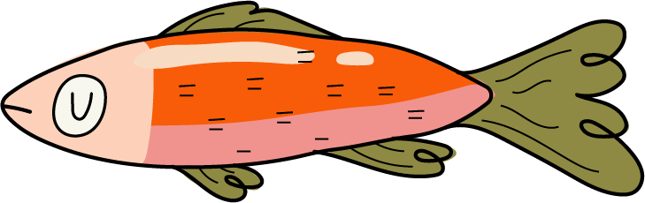
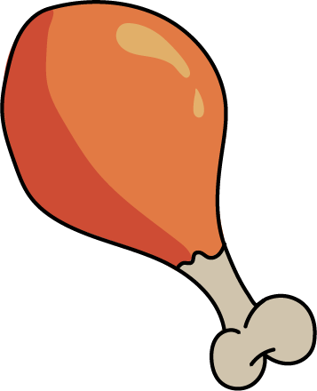
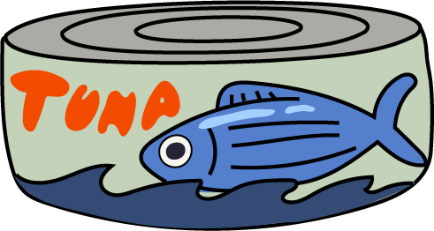

CAT ARCHIVES
Healthy Cat Treats Guide

Healthy vs Unhealthy Ingredients
The best cat treats use real, recognizable ingredients, like chicken, salmon, turkey, or tuna, and avoid fillers such as corn, wheat, soy, or artificial colors. Limited-ingredient treats are ideal, especially for sensitive cats. Always avoid treats with added sugar or anything containing onion, garlic, or mystery "meat by-products."

How Many Treats per Day
Treats should make up no more than 10% of a cat's daily calories. For most cats, this means just a few small treats a day. Giving too many can lead to weight gain or picky eating habits, so it's best to offer treats as occasional rewards rather than constant snacks.

DIY Treat Recipe
A simple homemade treat your cat might love: mix a small can of tuna (in water), one egg, and a spoonful of flour. Shape the mixture into tiny bite-sized pieces and bake at a low temperature until firm. They're easy, fresh, and let you control exactly what your cat is eating.